AEK
AEK
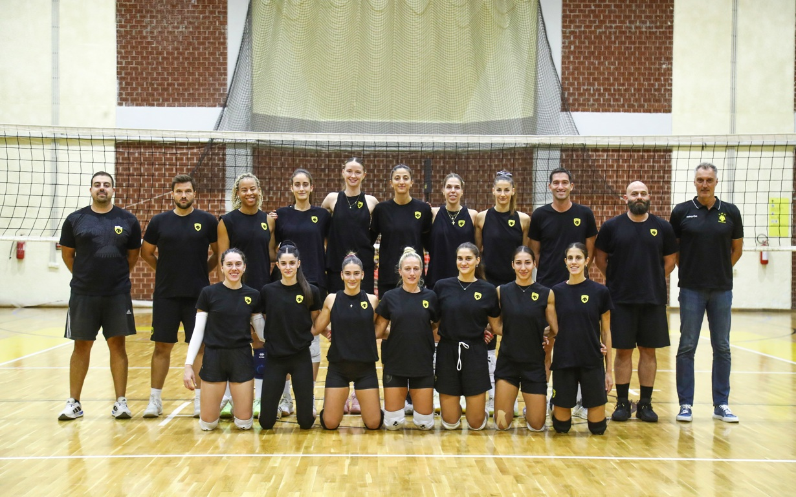
Ιστότοπος ομάδαςΠροπονητής: Κωνσταντίνος Ταμπουρατζής
| # | ΟΝΟΜΑΤΕΠΩΝΥΜΟ | ΘΕΣΗ | ΗΜ. ΓΕΝΝΗΣΗΣ | ΥΨΟΣ |
|---|---|---|---|---|
| 1 | Μαρία Κλέπκου | Outside Hitter | 13/05/2000 | 1.79 |
| 2 | Σουλτάνα Κιουτσιούκη | Middle Blocker | 24/09/1996 | 1.86 |
| 6 | Μαρίνα Στάικου | Setter | 24/08/2004 | 1.76 |
| 9 | Εβίτα Ξηντάρα | Libero | 09/02/1993 | 1.73 |
| 10 | Katerina Valkova | Setter | 06/02/1996 | 1.77 |
| 11 | Andriana Maria Matei | Outside Hitter | 24/05/1998 | 1.78 |
| 12 | Χαϊδίτσα Μήλιου | Middle Blocker | 15/04/2004 | 1.83 |
| 13 | Guewe Diouf | Outside Hitter | 15/06/2002 | 1.85 |
| 15 | Αγγελική Καββαδία | Middle Blocker | 17/02/1994 | 1.89 |
| 17 | Tuktu Burcu Yuzgenc | Opposite | 15/01/1999 | 1.92 |
| 20 | Σταματία Κυπαρίσση | Outside Hitter | 20/06/2002 | 1.84 |
| 21 | Φωτεινή Βουλγαράκη | Libero | 18/04/2003 | 1.65 |
| 33 | Sydni Schetnan | Middle Blocker | 12/12/2002 | 1.96 |
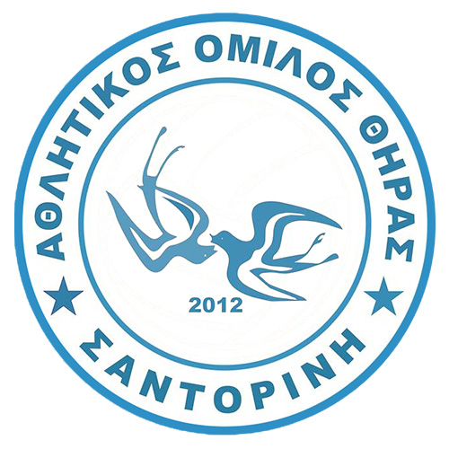
Α.Ο. ΘΗΡΑΣ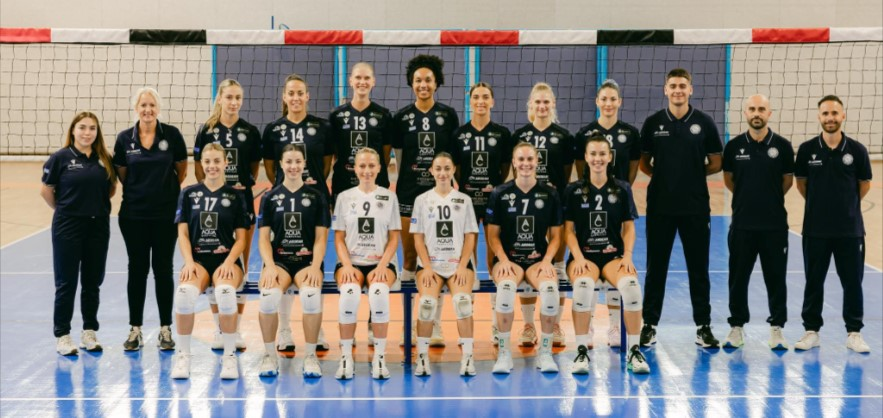
Ιστότοπος ομάδαςΠροπονητής: Μανώλης Σκουλικάρης
| # | ΟΝΟΜΑΤΕΠΩΝΥΜΟ | ΘΕΣΗ | ΗΜ. ΓΕΝΝΗΣΗΣ | ΥΨΟΣ |
|---|---|---|---|---|
| 1 | Yadhira Anchante | Setter | 19/11/2002 | 1.82 |
| 4 | Katarina Pavicic | Outside Hitter | 17/05/1999 | 1.80 |
| 7 | Αναστασία Σιρίνινα | Middle Blocker | 25/08/1995 | 1.87 |
| 9 | Ευαγγελία Τουλγαρίδου | Libero | 14/03/1998 | 1,63 |
| 10 | Λίνα Σαουλίδου | Libero | 16/11/2004 | 1.60 |
| 11 | Ελευθερία Μπαρμπαλιού | Setter | 10/01/2000 | 1.76 |
| 12 | Rica Maase | Opposite | 22/11/1999 | 1.86 |
| 13 | Αθηνά Δημητριάδη | Middle Blocker | 06/06/2000 | 1.95 |
| 15 | Χριστίνα Θωμαΐδου | Outside Hitter | 11/08/1999 | 1.74 |
| 16 | Μαρία Γενιτσαρίδη | Outside Hitter | 03/06/1994 | 1.85 |
| 18 | Ανδρομάχη Τσιόγκα | Middle Blocker | 03/11/2001 | 1.90 |
| 27 | Symone Abbott | Outside Hitter | 27/09/1996 | 1.86 |
| 29 | Yuliia Mirtskhulava | Outside Hitter | 02/04/1998 | 1.76 |
| 30 | Αναστασία Κεραμιτσοπούλου | Opposite | 20/08/2003 | 1.85 |
 Α.Ο. Μαρκόπουλο
Α.Ο. Μαρκόπουλο
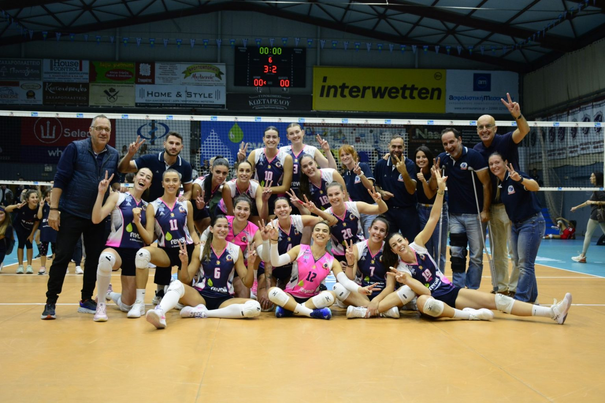
Ιστότοπος ομάδαςΠροπονητής: Γιώργος Ρούσης
| # | ΟΝΟΜΑΤΕΠΩΝΥΜΟ | ΘΕΣΗ | ΗΜ. ΓΕΝΝΗΣΗΣ | ΥΨΟΣ |
|---|---|---|---|---|
| 2 | Υακίνθη Οικονόμου | Middle Blocker | 16/10/2007 | 1.85 |
| 3 | Chloe Maree Walker | Middle Blocker | 13/02/2005 | 1.91 |
| 5 | Νίκη Κωτσαρά | Outside Hitter | 11/12/2004 | 1.85 |
| 6 | Vitalia Marmen | Outside Hitter | 03/02/1997 | 1.87 |
| 7 | Κατερίνα Αλλαγιάννη | Middle Blocker | 15/06/2004 | 1.88 |
| 8 | Αθανασία Ανδριοπούλου | Outside Hitter | 31/03/2009 | 1.90 |
| 9 | Αναστασία Δήμου | Libero | 20/07/2004 | 1.68 |
| 10 | Δωροθέα Χριστίνα Καράγκουτη | Outside Hitter | 30/03/2010 | 1.92 |
| 11 | Όλγα Λογαρά | Setter | 08/11/1999 | 1.85 |
| 12 | Μαρκέλλα Φραγκομίχαλου | Libero | 06/08/2004 | 1.70 |
| 14 | Διονυσία Μάτιου | Libero | 13/08/2001 | 1.73 |
| 16 | Αριάδνη Καθάριου | Middle Blocker | 28/11/2000 | 1.85 |
| 17 | Αναστασία Τριανταφύλλου | Libero | 09/01/2008 | 1.72 |
| 18 | Αντιγόνη Δήμου | Opposite | 09/09/2009 | 1.90 |
| 19 | Άννα-Μαρία Σπανού | Outside Hitter | 18/11/1995 | 1.88 |
| 20 | Kveta Grabovska | Setter | 29/05/2002 | 1.80 |
| 23 | Viktoriia Lokhmanchuk | Opposite | 09/05/2001 | 1.94 |
Α.Ο.Ν.Σ. ΜΙΛΩΝ
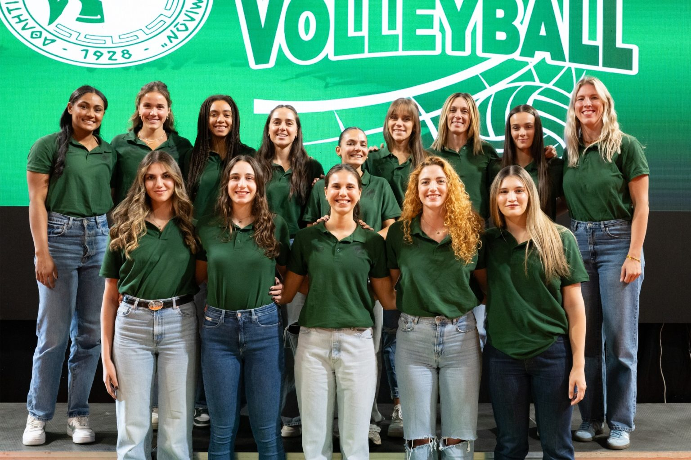
Ιστότοπος ομάδαςΠροπονητής: Κώστας Παπαδόπουλος
| # | ΟΝΟΜΑΤΕΠΩΝΥΜΟ | ΘΕΣΗ | ΗΜ. ΓΕΝΝΗΣΗΣ | ΥΨΟΣ |
|---|---|---|---|---|
| 1 | Έλενα Λεονταρίδου | Middle Blocker | 16/03/2001 | 1.86 |
| 2 | Νεφέλη Χατζηγρηγορίου | Setter | 21/05/2002 | 1.81 |
| 4 | Μαργαρίτα Χάνα | Libero | 01/01/1997 | 1.65 |
| 5 | Madyson Elizabeth Saris | Outside Hitter | 09/11/2003 | 1.86 |
| 6 | Monica Huchon Salkute | Outside Hitter | 03/05/1993 | 1.85 |
| 7 | Παυλίνα Κίντου | Opposite, Outside Hitter | 28/06/2006 | 1.78 |
| 8 | Αμαλία Σκουλούδη | Middle Blocker | 19/07/2004 | 1.86 |
| 11 | Λαμπριάννα Πήττα | Middle Blocker | 30/01/1998 | 1.83 |
| 14 | Γεωργία Ωραιοπούλου | Libero | 16/10/2002 | 1.71 |
| 15 | Αγάπη Μπρουκς | Outside Hitter | 10/03/2003 | 1.80 |
| 16 | Κασιανή Αμπατζή | Middle Blocker | 16/10/2008 | 1.81 |
| 18 | Παρασκευή Ζαφειρίου | Outside Hitter | 08/06/2006 | 1.79 |
| 19 | Γεωργία Αργυρίου | Middle Blocker | 12/11/1988 | 1.84 |
| 21 | Paula Weronika Zaborowska | Setter | 07/06/2000 | 1.79 |
| 92 | Kadi Kullerkann | Opposite | 19/08/1992 | 1.95 |
 Α.Σ. ΑΡΗΣ
Α.Σ. ΑΡΗΣ
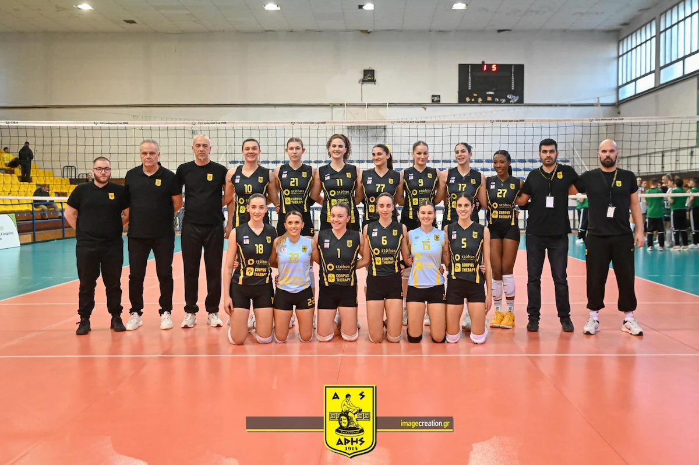
Ιστότοπος ομάδαςΠροπονητής: Χρήστος Πάτρας
| # | ΟΝΟΜΑΤΕΠΩΝΥΜΟ | ΘΕΣΗ | ΗΜ. ΓΕΝΝΗΣΗΣ | ΥΨΟΣ |
|---|---|---|---|---|
| 1 | Σοφία Τόλιου | Setter | 01/07/2002 | 1.76 |
| 2 | Veronica Oluoch | Opposite | 05/06/1999 | 1.80 |
| 5 | Ιωάννα Πολυνοπούλου | Middle Blocker | 09/04/1995 | 1.80 |
| 6 | Νικολέτα Πλακιά | Middle Blocker | 22/06/2002 | 1.85 |
| 7 | Εβελίνα Γζουντέλλη | Outside Hitter | 06/04/2011 | 1.76 |
| 9 | Φωτεινή Μπαρμπαλιού | Opposite | 16/05/2008 | 1.85 |
| 10 | Ευαγγελία Μερτέκη | Outside Hitter | 29/04/1991 | 1.90 |
| 11 | Δέσποινα Λαμπριανίδου | Middle Blocker | 10/02/2004 | 1.96 |
| 12 | Καλλιόπη Χαριστέα | Outside Hitter | 19/10/2010 | 1.75 |
| 15 | Θεοδώρα Ευθυμιοπούλου | Libero | 15/07/2005 | 1.72 |
| 17 | Κυριακή Αντωνιάδου | Middle Blocker | 23/09/2008 | 1.85 |
| 18 | Παναγιώτα Ξανθοπούλου | Setter | 21/09/1999 | 1.80 |
| 20 | Ιωάννα Λεοντζίνη | Libero | 03/07/2010 | 1.60 |
| 21 | Iuna Zadorojnai | Opposite | 08/01/2001 | 1.90 |
| 22 | Ευδοξία Γεωργιάδου | Libero | 29/08/1995 | 1.63 |
| 27 | Chard'e Alese Vanzandt | Opposite | 19/07/2002 | 1.78 |
| 28 | Sladjana Erić | Middle Blocker | 29/07/1983 | 1.86 |
| 77 | Κατερίνα Κοκότη | Middle Blocker | 21/07/2002 | 1.82 |
 Α.Σ.Π. ΘΕΤΙΣ
Α.Σ.Π. ΘΕΤΙΣ
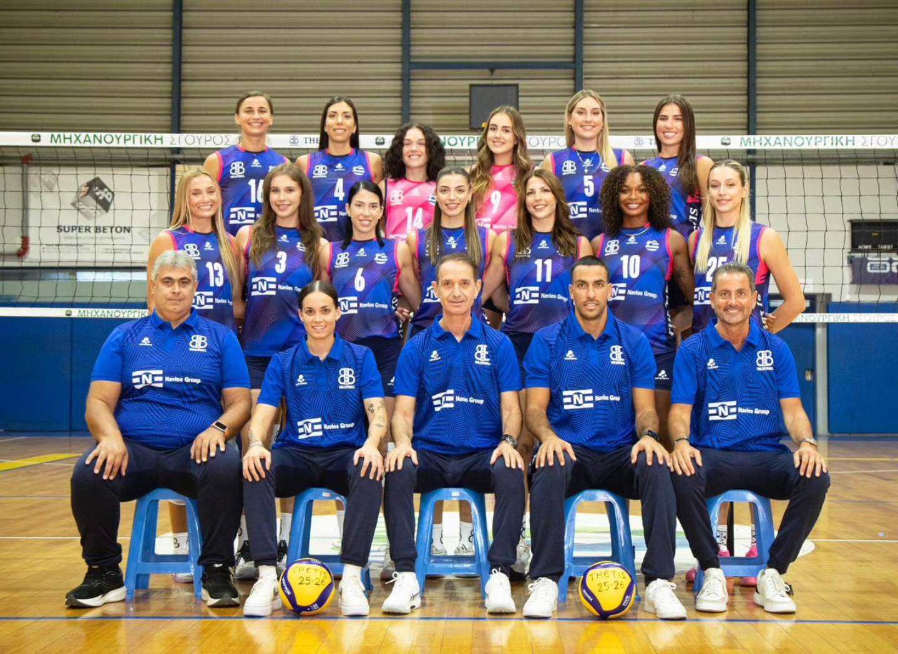
Ιστότοπος ομάδαςΠροπονητής: Γιάννης Νικολάκης
| # | ΟΝΟΜΑΤΕΠΩΝΥΜΟ | ΘΕΣΗ | ΗΜ. ΓΕΝΝΗΣΗΣ | ΥΨΟΣ |
|---|---|---|---|---|
| 1 | Elise Malia Ferreira | Setter | 26/09/2000 | 1.77 |
| 3 | Αθανασία Γκιαούρη | Opposite | 09/11/2006 | 1.89 |
| 4 | Κωνσταντίνα Βλαχάκη | Outside Hitter | 08/05/1995 | 1.80 |
| 5 | Ευαγγελία Γαροφαλάκη | Setter | 14/04/2003 | 1.77 |
| 6 | Αναστασία Φωκιανού | Outside Hitter | 05/12/1994 | 1.80 |
| 9 | Φανή Κοντονή | Libero | 15/04/2007 | 1.72 |
| 11 | Ραφαηλία Κυπαρίσση | Middle Blocker | 20/07/1999 | 1.85 |
| 12 | Γεωργία Σταυρινίδη | Middle Blocker | 30/12/2001 | 1.90 |
| 13 | Olivia Lane Utterback | Opposite | 19/09/2001 | 1.83 |
| 14 | Ελευθερία Μανιατογιάννη | Libero | 09/12/1995 | 1.60 |
| 16 | Agnes Pallag | Outside Hitter | 09/12/1995 | 1.82 |
| 17 | Αναστασία Ματσαρόκη | Middle Blocker | 10/08/1999 | 1.85 |
| 25 | Ασημίνα Νικολογιαννη | Outside Hitter | 04/06/1999 | 1.84 |
Ζ.Α.Ο.Ν
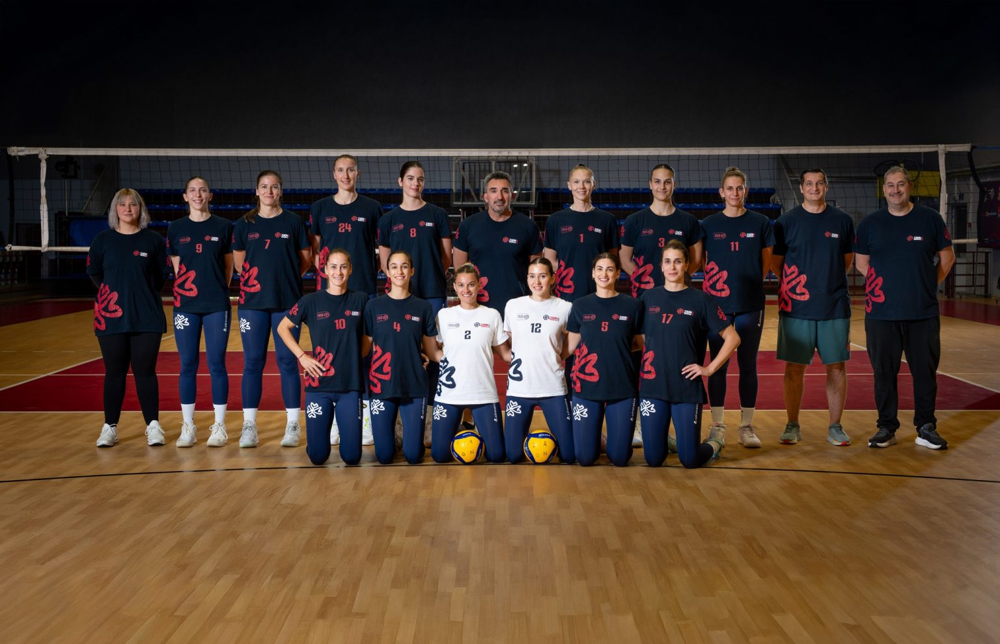
Ιστότοπος ομάδαςΠροπονητής: Χαράλαμπος Μυτσκίδης
| # | ΟΝΟΜΑΤΕΠΩΝΥΜΟ | ΘΕΣΗ | ΗΜ. ΓΕΝΝΗΣΗΣ | ΥΨΟΣ |
|---|---|---|---|---|
| 1 | Κατερίνα Γιώτα | Middle Blocker | 03/07/1990 | 1.84 |
| 2 | Μαριάννα Μπελιά | Libero | 24/10/1998 | 1.65 |
| 3 | Ελπίδα Τικμανίδου | Outside Hitter | 29/08/2008 | 1.82 |
| 4 | Θεοδώρα Φουμάκη | Setter | 05/08/2005 | 1.80 |
| 5 | Ιωάννα Κασδοβασίλη | Middle Blocker | 13/05/1997 | 1.82 |
| 6 | Ευφροσύνη Αλεξάκου | Outside Hitter | 26/02/2000 | 1.82 |
| 7 | Φερονίκη Ζιώγα | Opposite | 25/04/1996 | 1.84 |
| 8 | Έρρικα Γράβαρη | Middle Blocker | 04/11/2006 | 1.88 |
| 10 | Desislava Nikolova | Outside Hitter | 21/12/1991 | 1.82 |
| 11 | Ελένη Μπλιάτσιου | Outside Hitter | 18/12/2001 | 1.85 |
| 12 | Χαρά Σπυροπούλου | Libero | 18/09/2001 | 1.76 |
| 14 | Marlena Kowalewska | Setter | 09/01/1992 | 1.76 |
| 24 | Lorenne Teixeira | Opposite | 08/01/1996 | 1.87 |
ΗΛΥΣΙΑΚΟΣ Α.Ο.
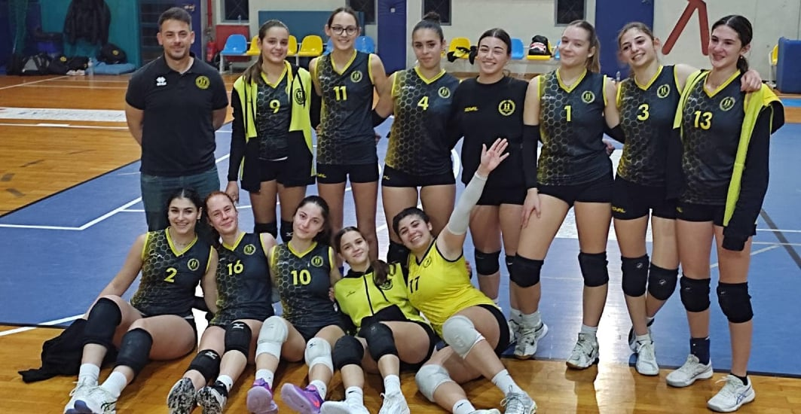
Ιστότοπος ομάδαςΠροπονητής: Μαρία Αριστείδου
| # | ΟΝΟΜΑΤΕΠΩΝΥΜΟ | ΘΕΣΗ | ΗΜ. ΓΕΝΝΗΣΗΣ | ΥΨΟΣ |
|---|---|---|---|---|
| 1 | Yasmour Mislina Kilic | Outside Hitter | 30/03/1996 | 1.89 |
| 3 | Χριστίνα Νικολαΐδη | Middle Blocker | 30/03/1996 | 1.89 |
| 4 | Μαριάννα Τσιάκου | Outside Hitter | 03/04/2007 | 1.74 |
| 5 | Φωτεινή Παπαϊωάννου | Middle Blocker | 07/11/2002 | 1.86 |
| 6 | Κατερίνα-Ελένη Σακκά | Libero | 21/03/2003 | 1.70 |
| 8 | Ειρήνη Αγγελοπούλου | Opposite | 02/10/2003 | 1.82 |
| 9 | Ερμίνα Γκέκοβιτς | Outside Hitter | 21/05/2005 | 1.82 |
| 12 | Γεωργία Μητακίδου | Middle Blocker | 14/03/1999 | 1.87 |
| 14 | Κατερίνα Σουφλέρη | Setter | 18/03/2004 | 1.81 |
| 15 | Σοφία Σακκά | Setter | 14/08/2003 | 1.80 |
| 18 | Ίρις Δασκαλοπούλου | Setter | 29/10/2009 | 1.70 |
| 30 | Γκαμπριέλα Πλεσέα | Outside Hitter | 08/07/2008 | 1.74 |
| 32 | Δάφνη Κορνακιά | Outside Hitter | 22/08/2012 | 1.71 |
 ΟΛΥΜΠΙΑΚΟΣ Σ.Φ.Π
ΟΛΥΜΠΙΑΚΟΣ Σ.Φ.Π
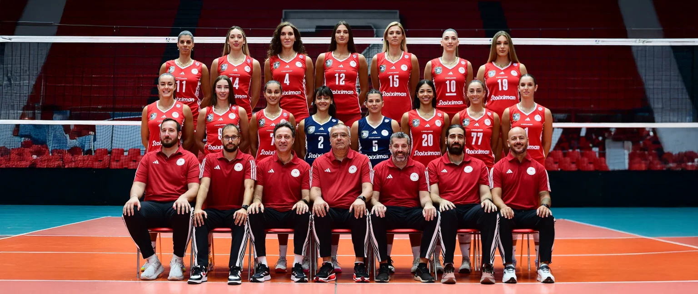
Ιστότοπος ομάδαςΠροπονητής: Branko Kovačević
| # | ΟΝΟΜΑΤΕΠΩΝΥΜΟ | ΘΕΣΗ | ΗΜ. ΓΕΝΝΗΣΗΣ | ΥΨΟΣ |
|---|---|---|---|---|
| 1 | Χρύσα Καραγιάννη | Middle Blocker | 07/06/2008 | 1.83 |
| 2 | Μαριαλένα Αρτακιανού | Libero | 21/05/1994 | 1.68 |
| 5 | Ιφιγένεια Σαμπάτη | Libero | 01/08/1998 | 1.68 |
| 7 | Ελισάβετ Ηλιοπούλου | Setter | 25/01/2001 | 1.76 |
| 9 | Νάσια Φακοπουλίδου | Outside Hitter | 22/05/1998 | 1.81 |
| 10 | Μελίνα Εμμανουηλίδου | Middle Blocker | 18/09/1994 | 1.86 |
| 11 | Μαρία Οικονομίδου | Opposite | 18/08/1992 | 1.85 |
| 12 | Milica Kubura | Opposite | 20/03/1993 | 1.94 |
| 14 | Κυριακή Τερζόγλου | Middle Blocker | 22/11/2003 | 1.86 |
| 15 | Jovana Stevanovic | Middle Blocker | 30/06/1992 | 1.92 |
| 17 | Kenia Carcaces | Outside Hitter | 22/01/1986 | 1.90 |
| 18 | Yasmine Abderrahim | Outside Hitter | 16/04/1999 | 1.82 |
| 19 | Ιωάννα Δημητρίου | Middle Blocker | 03/09/2008 | 1.87 |
| 20 | Amanda Coneo | Outside Hitter | 20/12/1996 | 1.78 |
| 77 | Isabella Di Iulio | Setter | 26/11/1991 | 1.75 |
 Π.Α.Ο.Κ.
Π.Α.Ο.Κ.
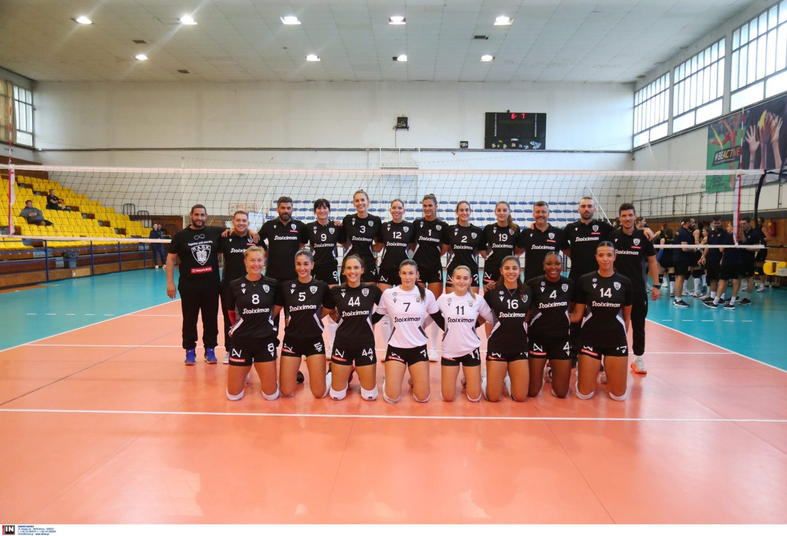
Ιστότοπος ομάδαςΠροπονητής: Γιάννης Γιαπάνης
| # | ΟΝΟΜΑΤΕΠΩΝΥΜΟ | ΘΕΣΗ | ΗΜ. ΓΕΝΝΗΣΗΣ | ΥΨΟΣ |
|---|---|---|---|---|
| 1 | Tara Taubner | Opposite | 01/11/2003 | 1.88 |
| 2 | Νίκη Απλαδά | Middle Blocker | 08/11/2002 | 1.85 |
| 3 | Αριστέα Τοντάι | Middle Blocker | 05/07/1999 | 1.96 |
| 4 | T’ara Ceasar | Outside Hitter | 20/07/1999 | 1.85 |
| 5 | Στυλιανή Αντύπα | Outside Hitter | 31/08/2002 | 1.76 |
| 6 | Jovana Kocic | Middle Blocker | 24/02/1998 | 1.90 |
| 7 | Λίνα Θεοδοσίου | Libero, Outside Hitter | 25/10/2002 | 1.75 |
| 8 | Ilka Van De Vyver | Setter | 26/01/1993 | 1.80 |
| 9 | Κωνσταντίνα Μπαλογιάννη | Outside Hitter | 26/10/2003 | 1.86 |
| 11 | Μαρία Καραμπάση | Libero | 01/12/2003 | 1.65 |
| 12 | Τατιάνα Αρμουτσή | Middle Blocker | 24/05/2003 | 1.84 |
| 13 | Βούλη Κουρτίδου | Libero | 04/11/1999 | 1.69 |
| 14 | Άλκηστις Καραφουλίδου | Opposite | 13/09/1999 | 1.95 |
| 21 | Έλενα Μπάκα | Outside Hitter | 23/06/2001 | 1.86 |
| 44 | Μαρίνα Τσοχατζή | Setter | 17/07/1993 | 1.77 |
ΠΑΝΑΘΗΝΑΪΚΟΣ Α.Ο.
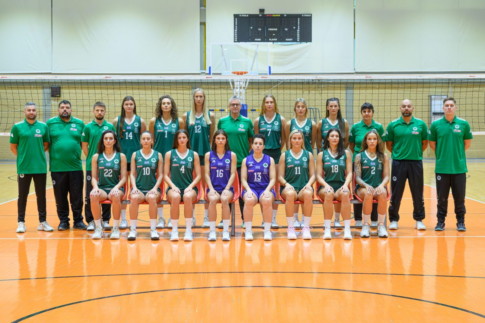
Ιστότοπος ομάδαςΠροπονητής: Alessandro Chiappini
| # | ΟΝΟΜΑΤΕΠΩΝΥΜΟ | ΘΕΣΗ | ΗΜ. ΓΕΝΝΗΣΗΣ | ΥΨΟΣ |
|---|---|---|---|---|
| 1 | Ειρήνη Χατζηευστρατιάδου | Middle Blocker | 02/09/1995 | 1.85 |
| 2 | Micaya Monet White | Outside Hitter | 20/09/1998 | 1.86 |
| 3 | Αφροδίτη Γιώτα | Middle Blocker | 03/12/1999 | 1.82 |
| 4 | Ευαγγελία Τάνη | Setter | 22/07/2004 | 1.82 |
| 6 | Όλγα Στράντζαλη | Outside Hitter | 12/01/1996 | 1.85 |
| 7 | Haylie Lynn Bennett | Opposite | 02/05/1998 | 1.86 |
| 10 | Μάρα Ράπτη | Outside Hitter | 30/10/1996 | 1.78 |
| 11 | Λαμπρινή Κωνσταντινίδου | Setter | 16/09/1996 | 1.84 |
| 12 | Martina Samadan | Middle Blocker | 11/09/1993 | 1.93 |
| 13 | Παναγιώτα Ρόγκα | Libero | 04/07/1987 | 1.67 |
| 14 | Monika Lampkowska | Outside Hitter | 06/11/1999 | 1.83 |
| 16 | Γεωργία-Μαρία Αντωνακάκη | Libero | 16/09/2002 | 1.75 |
| 18 | Μαρκέλλα Παπαγεωργίου | Middle Blocker | 16/09/2002 | 1.82 |
| 22 | Μανωλίνα Κωνσταντίνου | Outside Hitter | 16/09/2002 | 1.83 |
| 23 | Άντζελα Παπά | Opposite | 11/05/1997 | 1.80 |
 ΠANIΩNIOΣ
ΠANIΩNIOΣ
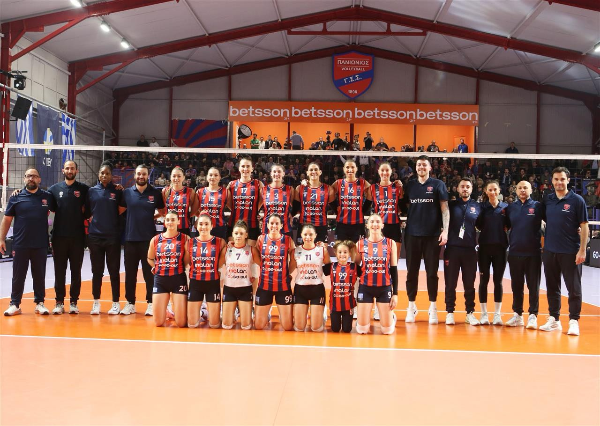
Ιστότοπος ομάδαςΠροπονητής: Yunus Öçal
| # | ΟΝΟΜΑΤΕΠΩΝΥΜΟ | ΘΕΣΗ | ΗΜ. ΓΕΝΝΗΣΗΣ | ΥΨΟΣ |
|---|---|---|---|---|
| 1 | Bianca Ristisevic | Outside Hitter | 25/07/1994 | 1.90 |
| 3 | Μαρία Νομικού | Middle Blocker | 25/07/1994 | 1.90 |
| 7 | Ξένια Κακουράτου | Libero | 16/06/1993 | 1.58 |
| 8 | Έλενα Μιλεντίγιεβιτς | Outside Hitter | 16/06/1993 | 1.74 |
| 9 | Nina Stojiljkovic | Setter | 01/09/1996 | 1.78 |
| 11 | Μαρτίνα Ξανθοπούλου | Libero | 30/03/1993 | 1.65 |
| 12 | Ευαγγελία Χαντάβα | Outside Hitter | 16/06/1993 | 1.88 |
| 14 | Εβελίνα Φλιάκου | Setter | 18/02/2000 | 1.75 |
| 15 | Αθανασία Λιάγκη | Opposite | 24/11/1995 | 1.83 |
| 16 | Elitsa Vasileva-Atanasijevic | Outside Hitter | 13/05/1990 | 1.90 |
| 17 | Polina Rahimova | Opposite | 05/06/1990 | 1.98 |
| 20 | Γεωργία-Λούλα Αγγελοπούλου | Outside Hitter | 11/02/2005 | 1.80 |
| 21 | Κατερίνα Ζακχαίου | Middle Blocker | 26/07/1998 | 1.92 |
| 77 | Γεωργία Λαμπρούση | Middle Blocker | 27/01/1993 | 1.84 |
| 99 | Ιωάννα Καρέλια | Middle Blocker | 20/12/1987 | 1.82 |